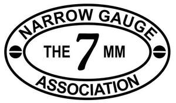
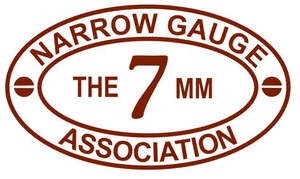
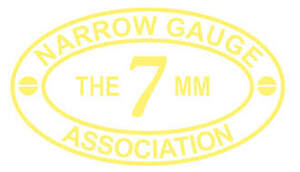
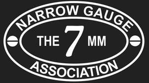

Trade Mark Journal No.2025/040 3 October 2025
UK00004267438 22 September 2025 (28,35)
Mark 1

Mark 2

Mark 3

Mark 4

- Class 28
- Model railways; model train layouts; model train sets; toy cable railways; toy model train sets; model toy steam engines; tracks for model trains; model trains; model trains (scale -); model railways (scale -); model steam engines (scale -); scale model railways; scale model trains; scale model steam engines; radio controlled model railways; radio controlled model train sets; radio controlled toy model train sets; radio controlled model toy steam engines; plastic model kits for making model railways; plastic model kits for making model trains; plastic model kits for making toy steam engines; kits of parts [sold complete] for making toy model railways; kits of parts [sold complete] for making toy model trains; kits of parts [sold complete] for making toy steam engines; automobile engine models being toys; tracks for model vehicles; model vehicles; model vehicles (scale -); vehicles (scale model -); scale model vehicles; toy model vehicles; scale model cars [playthings]; scale model cars [toys]; model vehicles (scale -) [playthings]; scale model vehicles [playthings]; scale model vehicles [toys]; radio controlled scale model vehicles; scale model figures; toy scale models; toy models; toy model kits; remote controlled scale model vehicles; model vehicle racing sets; scale model kits [toys]; radio controlled model vehicles; plastic model kits for making toy vehicles; toy model hobbycraft kits; kits of parts [sold complete] for making toy model cars; kits [sold complete] for the construction of scale models; model craft kits of toy figures; craft model kits; models being toys; toy model hobby craft kits; model cars; toy model cars; toy model kit cars; radio controlled toy model cars; model cars [toys or playthings]; scale model aeroplanes; model aircraft; scale model airplanes; model plane kits; scale model buildings [toys]; scale model vegetation; scale model structures [toys]; model toys; toy miniature model boats.
- Class 35
- Retail services in relation to model railways, model train layouts, model train sets, toy cable railways, toy model train sets, model toy steam engines, tracks for model trains, model trains, model trains (scale -), model railways (scale -), model steam engines (scale -), scale model railways, scale model trains, scale model steam engines, radio controlled model railways, radio controlled model train sets, radio controlled toy model train sets, radio controlled model toy steam engines, plastic model kits for making model railways, plastic model kits for making model trains, plastic model kits for making toy steam engines, kits of parts [sold complete] for making toy model railways, kits of parts [sold complete] for making toy model trains, kits of parts [sold complete] for making toy steam engines, automobile engine models being toys, tracks for model vehicles, model vehicles, model vehicles (scale -), vehicles (scale model -), scale model vehicles, toy model vehicles, scale model cars [playthings], scale model cars [toys], model vehicles (scale -) [playthings], scale model vehicles [playthings], scale model vehicles [toys], radio controlled scale model vehicles, scale model figures, toy scale models, toy models, toy model kits, remote controlled scale model vehicles, model vehicle racing sets, scale model kits [toys], radio controlled model vehicles, plastic model kits for making toy vehicles, toy model hobbycraft kits, kits of parts [sold complete] for making toy model cars, kits [sold complete] for the construction of scale models, model craft kits of toy figures, craft model kits, models being toys, toy model hobby craft kits, model cars, toy model cars, toy model kit cars, radio controlled toy model cars, model cars [toys or playthings], scale model aeroplanes, model aircraft, scale model airplanes, model plane kits, scale model buildings [toys], scale model vegetation, scale model structures [toys], model toys, toy miniature model boats; trade show and exhibition services; trade show and commercial exhibition services; trade show and exhibition services in relation to model vehicles; trade show and commercial exhibition services in relation to model vehicles; trade show and exhibition services in relation to model railways; trade show and commercial exhibition services in relation to model railways; arranging of exhibitions for trade purposes; exhibitions (arranging -) for trade purposes; arranging of exhibitions for advertising purposes; exhibitions (arranging -) for advertising purposes; arranging of exhibitions for business purposes; exhibitions (arranging -) for business purposes; arranging of exhibitions for commercial purposes; exhibitions (arranging -) for commercial purposes; conducting of exhibitions for trade purposes; exhibitions (conducting -) for trade purposes; conducting of exhibitions for advertising purposes; exhibitions (conducting -) for advertising purposes; conducting of exhibitions for business purposes; exhibitions (conducting -) for business purposes; conducting of exhibitions for commercial purposes; exhibitions (conducting -) for commercial purposes; arranging and conducting of fairs and exhibitions for advertising purposes; arranging and conducting of fairs and exhibitions for business purposes; arranging and conducting trade show exhibitions; arranging and conducting of commercial exhibitions and shows; arranging and conducting of commercial exhibitions; organisation of events, exhibitions, fairs and shows for commercial, promotional and advertising purposes; organisation of exhibitions and events for commercial or advertising purposes; organisation of exhibitions and trade fairs for commercial and advertising purposes; organisation of exhibitions and trade fairs for commercial or advertising purposes; organisation of exhibitions or trade fairs for commercial or advertising purposes; organisation of exhibitions and trade fairs for business and promotional purposes; organisation of exhibitions for business or commerce; organisation of exhibitions for commercial and advertising purposes; organisation of exhibitions for commercial or advertising purposes.
THE 7MM NARROW GAUGE ASSOCIATION
Representative: Swindell & Pearson Limited